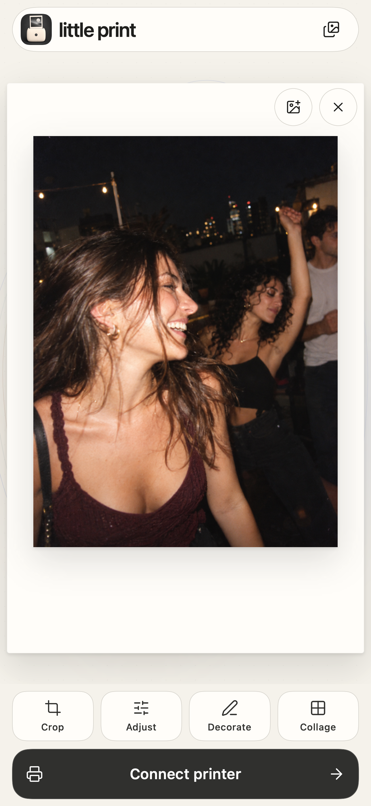
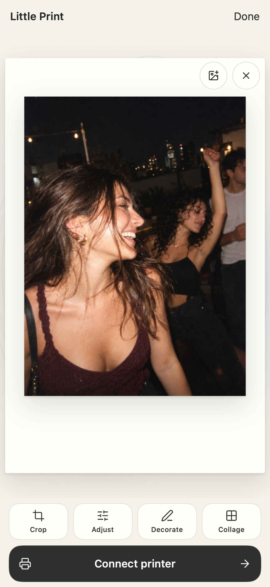
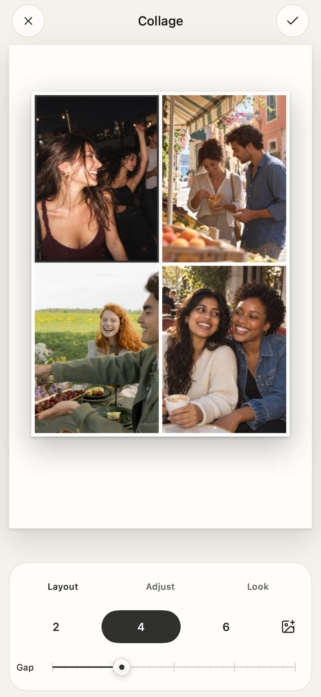
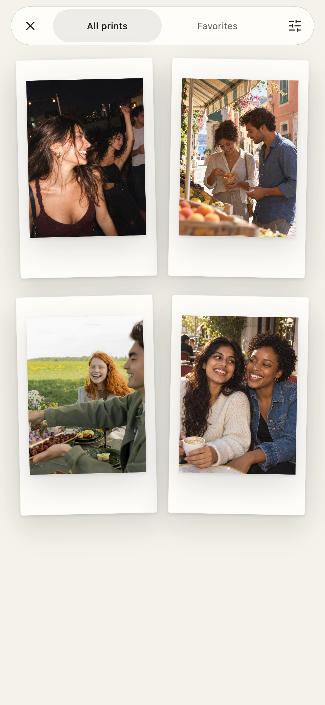

Pick a favorite
Choose a photo in Little Print, or start right in Photos: Share → Little Print. A few photos? Bring up to six into a collage.
For the moments you want to keep
A focused photo-to-print studio for instax mini Link 3. Start in Photos, make it yours, and print a little keepsake.
Submitted for App Store review. Not yet publicly available.
For iPhone and iPad · Physical printing requires an instax mini Link 3

From camera roll to keepsake
Choose a photo in Little Print, or start right in Photos: Share → Little Print. A few photos? Bring up to six into a collage.
Crop, adjust the light, add a note, or decorate. A large paper preview stays visible while you work. Apply what you like; cancel what you don’t.
Connect your mini Link 3, check the finished image, and tap Print. Each photo prints only when you choose.
Photos → Share → Little Print
The photo is already on your phone. Open it in Photos, tap Share, and choose Little Print. Crop it, adjust it, or bring a few favorites together in a collage.
Look over the finished image, connect your instax mini Link 3, and tap Print when you’re ready. Your original stays unchanged.

A few photos. One small story.
Two, four, or six moments on one print. Adjust each photo, find the right spacing, and make a collage that feels like you.
Or keep it simple: one photo, a careful crop, a favorite look. Decoration and lettering are there when a moment needs a little more.

Ready for the next one
Keep your print history on your device. Find a favorite, open it again, and give it another moment on paper.
Planning a few prints? Arrange a local waiting tray, then review and print each photo in turn. No unattended batches. No account required.

Your selected photos are edited on your device. Little Print doesn’t need an account or a shared cloud album to make a good print.
Read the full privacy noticeLittle Print is independent of Fujifilm. A compatible instax mini Link 3 is needed for physical printing; photo editing can be explored without a printer.
Tap the empty photo area to choose photos. Select up to ten in order; the first opens in an empty editor and the rest wait in the tray. Use Add photos in the queue to add waiting photos while preserving the current editor. Replace opens the first selected photo in the editor and queues the rest. The tray holds ten waiting photos, so the picker’s available capacity may be lower. Use the compact Replace or Remove icon buttons at the photo’s upper right as needed. Crop, Adjust, Decorate, and Collage open inline in one editing workspace, with a persistent Polaroid frame and compact tool palettes. Tap X to cancel a tool or the checkmark to apply its changes and return to the main print preview. Crop uses the same native editor in the app and Photos extension: frame, fit or fill, zoom, position, and rotate there. Inside Adjust, use Looks, Light, and Note. Inspect your photo in the main preview before tapping Print. The Polaroid footer stays clear, with no full-screen action. Collection keeps your printed photos in a simple filterable grid.
Open the waiting tray to reorder or remove photos. Review the current image and tap Print. Afterward, tap Next photo to open the next waiting image, review its edits, and tap Print again when ready. There is no unattended batch printing. The waiting tray is saved across app launches; it is separate from the current editor.
Check the physical printer before trying again. A connection can drop after the command was sent, so another attempt might use another sheet of film. Keep the app or share extension open while transferring a print.
Open a support issue on GitHub. Choose Bug report or Feature request. For a problem, include the app version, iPhone model, iOS version, what you did, and what happened. For printing issues, include the printer model and whether a photo came out. A GitHub account is required to submit.
GitHub issues are public. Do not include private photos, email addresses, device identifiers, or other personal information. Crop or redact any screenshot before uploading it. Your issue and attachments are handled by GitHub under its privacy statement. Opening this page does not send a report automatically.
If you installed through TestFlight, you can also open TestFlight, select Little Print, and choose Send Beta Feedback. Check screenshots for personal information before submitting. This support page is not an installation invitation.
This notice describes the Little Print app and its Photos share extension. It does not describe the independent practices of Apple, another destination app, or this website’s hosting provider.
The app uses Apple’s system photo picker for ordered selections of up to ten photos, subject to remaining tray capacity. The share extension receives the images you explicitly share, supporting one to six images. Multiple images open the collage editor. These routes do not require broad access to your Photos library; Apple may download selected items from your iCloud Photos library.
Your original Photos items are unchanged.
Framing, looks, lighting, notes, cropping, decoration, and collage rendering are processed locally. Selecting an image, applying an edit, or opening the extension does not automatically print it.
This release does not use the camera, microphone, or a nearby remote-camera service.
Saved print images, dates, printer names, and reported outcomes are stored locally using iOS file protection. The app and extension share preferences and history through an App Group on the same phone. That storage is not a shared album between two people or two phones.
Existing local history is migrated without deleting the original files. File locking and atomic writes protect concurrent updates. A saved outcome does not independently prove that a physical photo was ejected.
Up to ten waiting photos are saved as bounded, processed copies in the app’s local container using iOS file protection. The tray preserves your order across app launches. It is separate from the App Group used for history and preferences, and it does not synchronize between phones.
Reorder or remove waiting photos in the tray. Next photo opens one for review; it never starts printing automatically. Removing a tray item does not delete the original in Photos.
When you explicitly print, the prepared image is sent directly to your selected printer over Bluetooth. Little Print remembers printer preferences and connects when needed for printer actions. Available battery and film readings help you prepare.
The printer accepts one phone connection at a time. Cached readings show when they were checked; they are not live updates from another phone. Print commands are not automatically retried.
Sharing a saved photo opens the native sharing interface after you choose that action. You select the recipient or destination app, which then handles the exported copy under its own practices.
Exports, copies held by recipients, and physical prints remain independent of Little Print’s local data.
The app has no account service, advertising, analytics SDKs, or shared cloud album service. Apple’s permissions, Photos downloads, device backups, connectivity, and TestFlight diagnostics remain separate system services governed by your settings and Apple’s practices.
Visiting this page creates ordinary hosting requests and may generate hosting logs. Local photo processing is not a claim that no system service ever receives information.
Remove photo clears the current editor; it does not delete the original in Photos, waiting tray items, or earlier print history. Remove waiting copies separately using the tray controls. Deleting Little Print through iOS removes its local app data. Its extension is part of the app, not a separate account. App Group data is managed by iOS for the installed app and extension.
Offloading is different: iOS can retain documents and data. Device backups can also retain app data according to your settings. To remove backups or exported copies, use the controls of the service that holds them. Removing the app cannot retrieve copies from recipients or remove physical prints.
Manage Bluetooth permission in iOS Settings. Denying access prevents printer communication. When you voluntarily submit TestFlight feedback or crash information, Apple processes it and makes relevant information available to the developer. Check screenshots for private photos before sending them.
Check the date above and the release notes when updating. This notice covers the simplified photo-printing release; it does not advertise earlier experimental features.